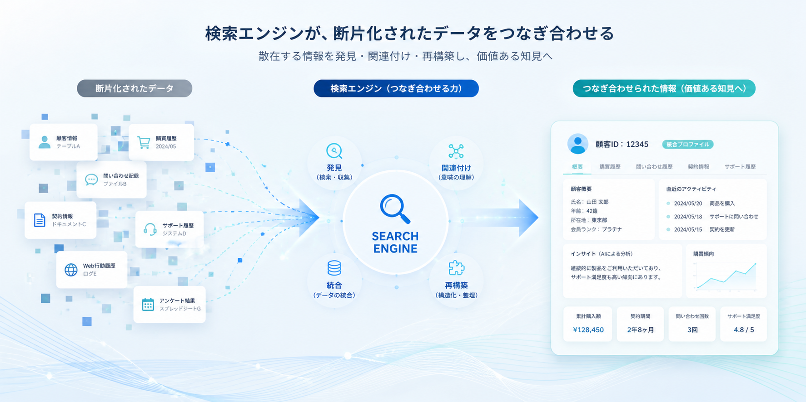

オムニバス・サーチの進化
株式会社オムニバス・アーカイブが提供する「オムニバス・サーチ」は、膨大なデータアーカイブの中から、お客様が必要とする情報を瞬時に抽出・視覚化する当社独自の検索システムです。
この度、システムの基盤となるAIアルゴリズムの大規模なアップデートを実施し、断片化されたアーカイブデータからの情報抽出速度および精度が前バージョン比で40%向上いたしました。本日は、このアップデートによってどのような進化を遂げたのか、技術的な観点からご紹介します。
アップデートの核心：断片化データの再構築と推論
データ復旧の現場においては、すべてのデータが完全な形で救出されるとは限りません。中には、物理的な破損や経年劣化によって一部が欠損し、「断片化」してしまったデータも数多く存在します。従来の検索アルゴリズムでは、このような不完全なデータは「ノイズ」として処理され、検索結果に適切に反映させることが困難でした。
今回のアップデートでは、新たに開発した「コンテキスト推論エンジン」を実装しました。これにより、欠損したデータの前後関係やメタデータ、さらには類似のデータパターンをAIがリアルタイムで解析し、不完全な状態のファイルであっても、その内容を高度に推論して検索対象に含めることが可能となりました。

自然言語処理（NLP）の強化
また、ユーザーが入力した検索クエリの意図を正確に読み取るため、自然言語処理（NLP）モデルのチューニングを行いました。
単なるキーワードの一致だけでなく、表記揺れ（例：「サーバー」と「サーバ」など）の吸収、専門用語の同義語の認識、さらには「いつ、誰が作成したどのような資料か」といった曖昧な検索条件に対しても、AIが文脈を解釈し、最も関連性の高いアーカイブを的確に提示します。これにより、お客様が探している情報へ到達するまでの時間が大幅に短縮されました。
セキュリティとの両立
検索精度を高める一方で、データに対するアクセス権限の管理もさらに厳格化しています。オムニバス・サーチは、検索を実行するユーザーに付与された権限レベルをシステムが瞬時に判定し、閲覧が許可されていない機密データは、たとえ検索条件に合致していても結果から完全に秘匿されます。
私たちは、高度な利便性と強固なセキュリティを完全に両立させることこそが、エンタープライズ向けの検索システムに求められる最低条件であると考えています。
今後の展望
情報の量は今後も爆発的に増え続けると予想されます。「見つからないデータは、失われたデータと同じである」という理念のもと、私たちは「オムニバス・サーチ」をさらに洗練されたプラットフォームへと進化させていきます。
今後も定期的なアルゴリズムのアップデートを行い、お客様の大切な情報の活用を強力にサポートしてまいります。